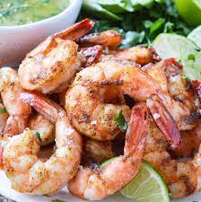

Spicy baked shrimps

Description
These spicy baked shrimp are made with a perfect blend of spices! So easy and quick to make!
Ingredients
- 1/2 cup olive oil
- 2 tablespoons Cajun seasoning
- 2 tablespoons lemon juice
- 2 tablespoons chopped fresh parsley
- salt and ground black pepper to taste
- 1 tablespoon honey
- 1 tablespoonsoy sauce
- 1 pinch cayenne pepper
- 1 pound uncooked shrimps, peeled and deveined
- 3 avocados, sliced
- cooking spray
Steps
- Step 1: Whisk olive oil, Cajun seasoning, lemon juice, parsley, honey, soy sauce, and cayenne pepper together in a large glass or ceramic bowl. Add shrimp and toss to evenly coat. Cover the bowl with plastic wrap and marinate in the refrigerator for 1 hour.
- Step 2: Preheat the oven to 450 degrees F (230 degrees C). Spray a baking dish with cooking spray.
- Step 3: Transfer shrimp into the prepared baking dish and pour any remaining marinade over top.
- Step 4: Bake in the preheated oven until shrimp are bright pink on the outside and the meat is opaque, about 10 minutes.